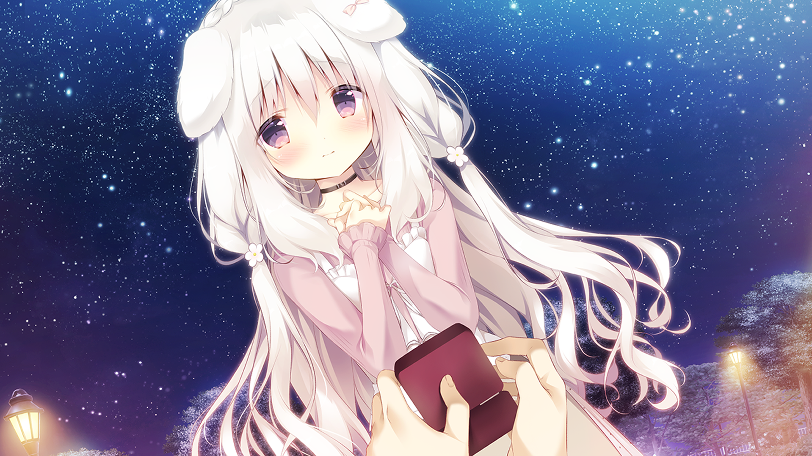
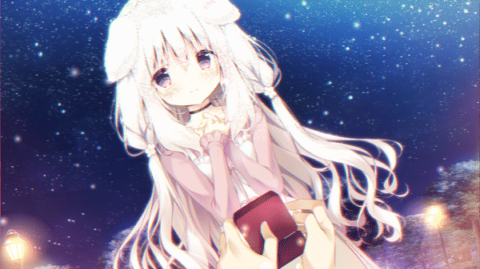

translateY 上下浮动 + rotate 轻摇。
| 效果 | 能做吗 | 原理 |
|---|---|---|
| 头发飘动 | 能 | 把头发区域的像素按正弦波**平移**（逐像素重采样），不是"长出新的头发" |
| 呼吸起伏 | 能 | 胸口区域纵向拉伸 1.2%，本质是像素被拉长 |
| 星星闪烁 / 灯亮呼吸 | 能 | 在选定区域叠加亮度（改像素值） |
| 水面倒影晃动 | 能 | 镜像 + 横向波浪位移 |
| 整张图扭曲 / 液化 | 能 | 位移场扭曲，像素搬家 |
| 眨眼 | 勉强 | 把眼睛区域压扁 + 用肤色盖住 → 能"闭"，但会露出补丁痕迹 |
| 抬手 / 转头 / 换姿势 | 不能 | 这些姿势的像素**原本不存在**，我没法凭空画出来 |
| 她走路 / 转身离开 | 不能 | 需要新画面（序列帧 / 骨骼动画 / 3D 模型） |